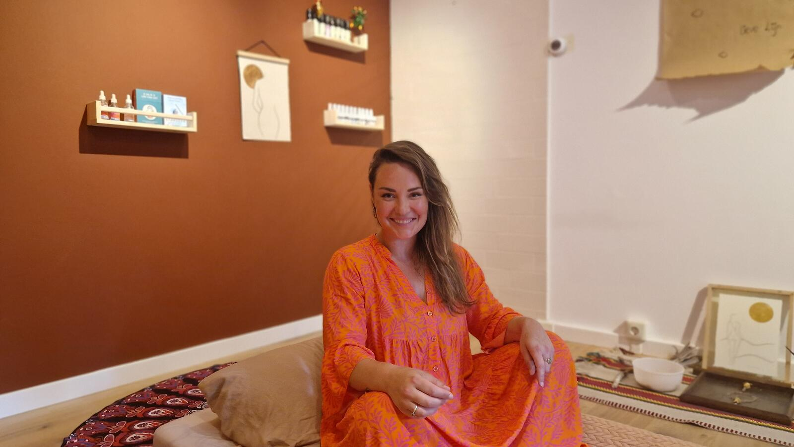

Twijfel je wat bij je past?
Twijfelen is normaal. Je hoeft niet de ‘juiste’ keuze te maken. In een vrijblijvend gesprek van een half uur kijken we samen waar je tegenaan loopt, wat je wilt veranderen en of mijn manier van werken bij je past.
Je laat iets van je horen
Via het formulier, WhatsApp of mail. Kies wat voor jou het makkelijkst voelt.
We plannen een moment
Ik stuur je een paar opties. Het gesprek is telefonisch of online.
We voelen samen
Wat heeft jouw systeem nu nodig? Je krijgt een eerlijk advies, zonder verplichting.
Of neem direct contact op

Laat je inspireren door de vragen van anderen.
Wat gebeurt er in de Adventure Call?
We bespreken waar je tegenaan loopt, wat je wilt veranderen en of mijn werkwijze aansluit. Je zit nergens aan vast.
Is dit therapie of coaching?
Een mix van beide, afgestemd op waar jij staat. Soms helend, soms richtinggevend.
Heb ik ervaring nodig met lichaamswerk, breathwork of familieopstellingen?
Nee. We werken stap voor stap en altijd in afstemming met jouw draagkracht.
Is breathwork veilig bij trauma?
Ja, mits zorgvuldig begeleid. Bij TRB werk ik altijd met afstemming en draagkracht.
Hoe boek ik een sessie?
Via de knop bij de sessie of dit formulier. Daarna krijg je een intakeformulier, en na goedkeuring een definitieve bevestiging.
Is een traject niet te intens?
De intensiteit zit in eerlijk kijken en voelen, niet in hard werken. We nemen de tijd, en juist daardoor ervaren mensen meer rust.
Waar vinden de sessies plaats?
Fysiek in mijn praktijk in Breda. Insight Calls en tussentijds contact zijn online of telefonisch.
Zijn de meditaties een eenmalige aankoop?
Ja. Je betaalt één keer, zonder abonnement, en ze blijven voor altijd van jou.
Waar en wanneer kan ik luisteren?
Waar en wanneer je wilt: thuis, onderweg of voor het slapen.
Kan mijn werkgever dit vergoeden?
Dat komt regelmatig voor, via een ontwikkel-, vitaliteits- of individueel keuzebudget.
Hoeveel sessies heb ik meestal nodig?
Dat verschilt. Sommigen merken na één sessie al verschil, anderen kiezen een kort traject om nieuw gedrag te verankeren.